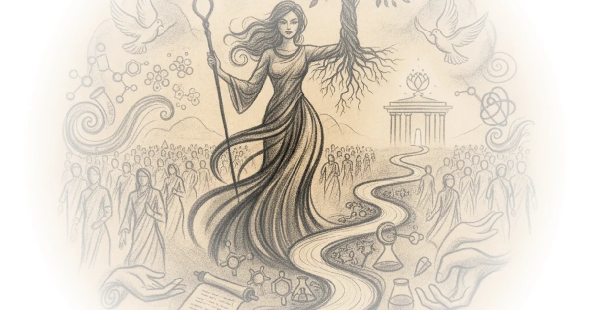

Vatican delegate makes changes for troubled ive Various · The Pillar ·Aug 19, 2026 · 13 min read · Faith
Why i'm staying out of the Substack religion debate Scott Alexander · Astral Codex Ten ·Aug 19, 2026 · 17 min read · Faith
Helen's stairs, the news, and back-to-school Various · The Pillar ·Aug 18, 2026 · 10 min read · Faith
Are black Americans really that religious? Kahlil Greene · History Can't Hide ·Aug 8, 2026 · 10 min read · Faith
Censorship will never solve antisemitism Yascha Mounk · Persuasion ·Aug 6, 2026 · 11 min read · Faith
Esther’s army and the search for shalom Scot McKnight · Scot McKnight ·Aug 3, 2026 · 11 min read · Faith 
The “mother of all living” and the “elect lady” Various · Wayfare ·Jul 10, 2026 · 15 min read · Faith
Paprocki: Charter revision included ‘opportunity for input’ Various · The Pillar ·Jul 9, 2026 · 23 min read · Faith
New PBS documentary shows that black American Muslim history goes beyond malcolm X Kahlil Greene · History Can't Hide ·Jul 9, 2026 · 11 min read · Faith
Your book review: The book of Abraham Scott Alexander · Astral Codex Ten ·Jul 8, 2026 · 69 min read · Faith
Astonishing christina, fireworks, and the news Various · The Pillar ·Jul 7, 2026 · 11 min read · Faith
Being back, a schism if you believe it, and world cup fever Various · The Pillar ·Jul 3, 2026 · 12 min read · Faith
Recognizing Christianity’s universal leftism for what it undisputedly is Various · Wayfare ·Jul 2, 2026 · 14 min read · Faith
‘A monument for politics’ — inside one diocese’s battle against a planned border wall Various · The Pillar ·Jul 2, 2026 · 10 min read · Faith
Why the cardinals ‘felt like a college again’ after consistory Various · The Pillar ·Jun 30, 2026 · 11 min read · Faith
Bishop tylka: Price of sheen beatification tickets offsets ‘very significant cost’ of event Various · The Pillar ·Jun 29, 2026 · 11 min read · Faith